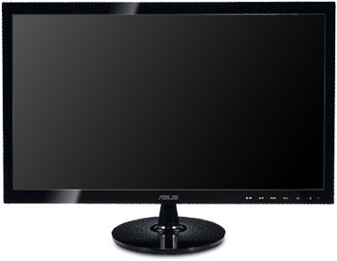
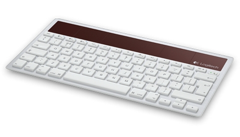
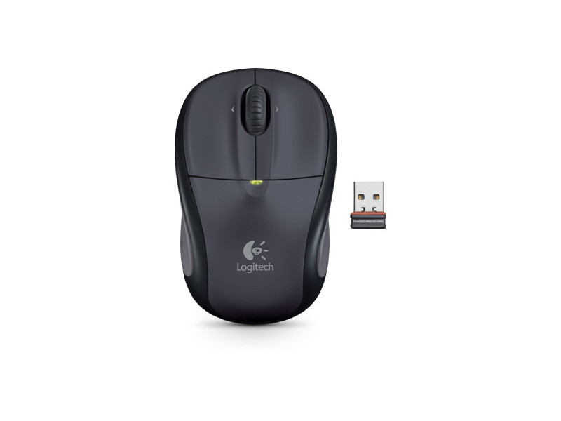

The Good
On a typical day I start with getting a little exercise and a good breakfast, otherwise I feel that I spend longer amounts of time on my homework because my brain feels like mush. So given that I have started my day with a fresh start I start with homework. Depending on how long it takes I try to finish it in time so that I can work on other projects for hobbies like Code Academy or Treehouse. I find that with a great schedule to plan out your priorities the efficiency is unmatched!
The Bad
Well it seems as though I stayed up a little late last night, which I try not to do because my next day is that much shorter. I awake some hours past my usual time and skip my workout routine in order to ketch up on homework. After spending a few hours on homework I realize I forgot to eat breakfast. That's probably why it took me 3 hours to do the homework in the first place, that and not exercising. Now I'm eating breakfast, well that is if you call chips breakfast at one in the afternoon. However I'm behind and need to catch up! At the end of the day I'm exhausted from turning my mind to goo from the homework, that I don't have the effort to put into Code Academy or Treehouse. This was not my best day.
The Ugly
Well I'm sure you can guess how this day goes. I awake in a daze thinking it's 10am only to realize the clock says 1pm. Well I guess I shouldn't have stayed up until 3am watching Game of Thrones while playing StarCraft 2. I probably also shouldn't of had a whole Dominoes pizza to myself along with whatever else I could get my hands on at 3 in the morning. I get out of bed, go over to the kitchen to find the mess I didn't feel like cleaning before. After cleaning and eating some brunch it is now 2:30pm and my day is passing right by me. Of course I also forgot about the 8 page paper due tonight, probably a side effect of Game of Thrones. I forget the side projects for the day and end up working on the paper until late in the night, leading to a bad day tomorrow.




My Station
I use a MacBook Pro Early 2011 series. Recently I upgraded the 4gb of ram to 16 and the difference is insane. I could only run one adobe software at a time and that just wouldn't do. At home I sit at a desk with a pull out area for a mouse and a keyboard. So I use this area for an extra keyword and mouse and use my MacBook at my monitor. However I can't stand working on only one monitor so I also have a Asus Monitor so I don't have to constantly tab between windows when working on a project.
Software
I like to use Sublime Text 2. Using the function Live Reload I can save my document and it automatically refreshes my browser for me, which is a great tool to have, especially when you first start coding. There is no particular reason why I use it other than my friends telling me it's a nice program. I did try Dreamweaver though and I didn't really like it. Even though it shows everything you are working on as you go and sometimes you can skip the coding and work right with elements I feel it is more of a hassle than anything. It can be a good way to learn so you understand how things work and what to expect from certain code, however if you keep working on just elements I feel it's a bad habit. For graphic design I love to work in InDesign, even if I'm creating logos or illustrations I find myself in InDesign more than Illustrator. I till have a lot to learn about Photoshop and am excited to see all of its capabilities.